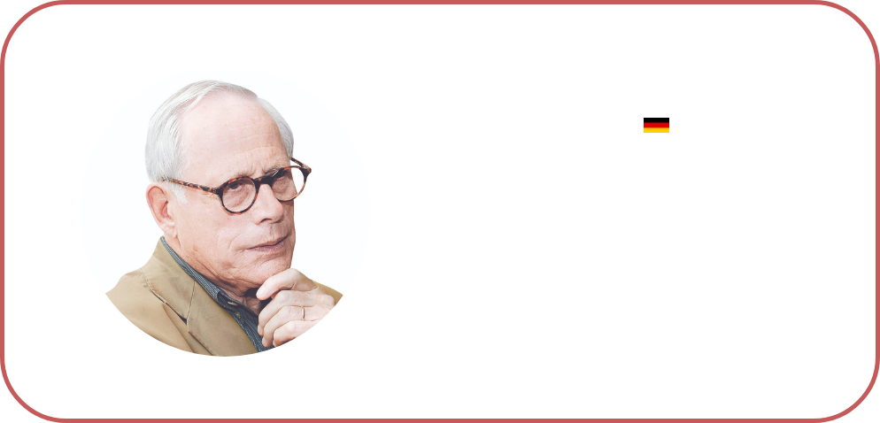

이름 디터 람스
출생 1932. 05. 20 GER
수상 · 로젠탈 스튜디오 구테고름상
· 밀라노 트리엔날레 금메달
· 황금콤파스상
경력 · 1988 Braun 전무이사
· 1968 Braun 디자인, 제작부서 이사
· 1961 ~ 1968 Braun 수석 디자이너
· 1955 Braun 입사
독일 출신의 세계적인 산업 디자이너.
가전회사 브라운의 디자인 부문 수장을 맡으며 쌓아온 명성은
현대의 디자인 업계에 지대한 영향을 미쳤다.
그는 시대를 앞서간 디자인으로 유명한데 그가 1960~70년대에
디자인한 제품들도 2010년대 제품이라고 해도 믿을 정도로
세련된 디자인을 자랑한다.
(전) 애플의 최고 디자인 책임자인 조너선 아이브가
가장 존경하는 디자이너라고 하며, 때문에
애플의 디자인에서도 브라운스러운 미니멀리즘을 엿볼 수 있다.
1932년 독일의 중부 도시 비스바덴(Wiesbaden),
교사인 부모님 밑에서 태어난 디터 람스.
그의 디자인 인생은 목수 장인이었던
할아버지의 작업장에서 일찍이 시작된다.
어렸을 적부터 할아버지 곁에서
갖은 도구와 연장을 익히고 목공 기술을 배운 덕분에
1948년, 비스바덴 예술대학에 진학해 건축과 인테리어를 공부한다.
이론 중심의 대학 공부에 회의를 느낀 람스는 학업을 중단 후
공방에서의 실무 경험을 쌓고, 이후 학업을 재개해 우수한 성적으로
석사 과정을 마무리한다.
졸업 후 2년여간 오토 아펠(Otto Apel) 건축사무소에서 일하지만
당시에도 인테리어 관련 작업을 할 때 역량이 더욱 크게 발휘되었다고 스스로 회고하는 등 디자인에 관한 관심도 못지않았다고.
시기적으로도 2차 세계 대전 후 나치 정부의 지배 아래 재건되는 독일의 사회상과 맞물려 그 관심과 열정을 뒷받침할 다양한 기회를 맞이한다.
바우하우스 영웅들에 의해 새로운 시대를 위한
건축과 디자인을 받아들일 준비가 한창이던 때.
디터 람스는 독일의 미국 영사관 건축 작업을 통해 모더니즘을 실제 작업으로 접하게 되며 본격적으로 디자인 세계에 접어든다.